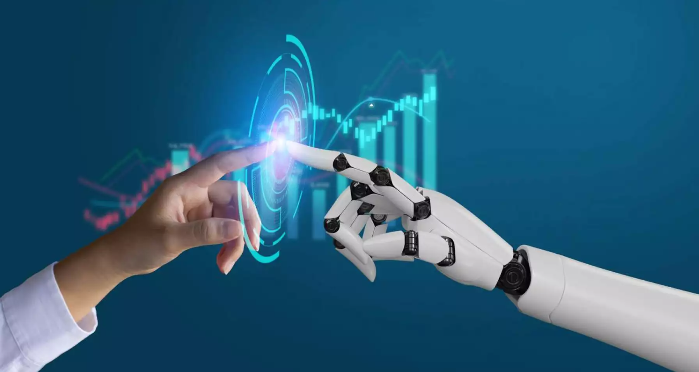

Fecha: 5 de Septiembre de 2024
Autor: Brayan Gutiérrez Dinarte
La inteligencia artificial (IA) está transformando nuestra vida diaria de maneras que antes parecían imposibles. Desde asistentes virtuales como Siri y Alexa hasta recomendaciones personalizadas en plataformas de streaming, la IA se ha convertido en una parte integral de nuestra rutina. Su impacto se siente en casi todos los aspectos de nuestras vidas, desde el hogar hasta el lugar de trabajo, revolucionando la manera en que interactuamos con la tecnología.
Asistentes Virtuales
Los asistentes virtuales, impulsados por IA, han pasado de ser simples herramientas a convertirse en asistentes personales completos. No solo nos ayudan a gestionar nuestras agendas y recordatorios, sino que también pueden realizar tareas complejas como enviar mensajes, realizar llamadas y buscar información en línea. Estos asistentes se están volviendo cada vez más inteligentes, aprendiendo de nuestras interacciones para ofrecer recomendaciones más personalizadas y precisas.
Además, los asistentes virtuales están integrados en una variedad de dispositivos, incluyendo teléfonos inteligentes, altavoces inteligentes y incluso electrodomésticos, lo que facilita su acceso y uso en diferentes contextos.
Recomendaciones Personalizadas
En el ámbito del entretenimiento, la IA ha revolucionado cómo descubrimos nuevos contenidos. Las plataformas de streaming, como Netflix y Spotify, utilizan algoritmos avanzados para analizar nuestro historial de visualización y escucha, así como nuestras interacciones con el contenido, para hacer recomendaciones que se alineen con nuestros gustos y preferencias. Esto no solo mejora nuestra experiencia como usuarios, sino que también ayuda a las plataformas a retener a sus clientes al ofrecerles contenido que realmente les interesa.
Estos algoritmos están en constante evolución, aprendiendo y adaptándose a nuestras preferencias cambiantes para ofrecer recomendaciones más acertadas con el tiempo.
Desafíos y Futuro
Aunque la IA ofrece numerosos beneficios, su implementación también plantea varios desafíos. Uno de los principales problemas es la privacidad, ya que los sistemas de IA a menudo requieren el acceso a grandes cantidades de datos personales para funcionar de manera efectiva. Además, los sesgos en los algoritmos pueden llevar a resultados injustos o inexactos, lo que plantea preocupaciones éticas y de equidad.
El futuro de la IA dependerá de cómo abordemos estos desafíos. La investigación en ética de la IA, la privacidad y la transparencia es crucial para garantizar que la tecnología se desarrolle de manera que beneficie a todos, minimizando los riesgos y maximizando los beneficios.
Tipos de Inteligencia Artificial
A continuación, exploramos algunos de los principales tipos de IA, cada uno con aplicaciones y ejemplos en la vida cotidiana:
1. IA para Imágenes
La IA para imágenes ha permitido avances significativos en el reconocimiento y análisis visual. En el ámbito médico, por ejemplo, la IA se utiliza para analizar imágenes médicas y ayudar en el diagnóstico de enfermedades. En el sector de la seguridad, el reconocimiento facial alimentado por IA mejora la vigilancia y la identificación de individuos.
Además, la tecnología de IA en cámaras de smartphones permite ajustes automáticos en la fotografía, como la corrección de color y el enfoque, para capturar imágenes de alta calidad sin necesidad de intervención manual.
2. IA para Texto
La IA para texto está transformando cómo interactuamos con los dispositivos y las aplicaciones. Los sistemas de procesamiento del lenguaje natural (NLP) permiten que las máquinas comprendan y generen texto de manera coherente, facilitando la creación de chatbots y asistentes virtuales que pueden mantener conversaciones fluidas con los usuarios.
Además, la generación automática de texto se utiliza en una variedad de aplicaciones, desde la creación de contenido hasta la generación de informes, haciendo que estas tareas sean más rápidas y eficientes.
3. IA para Idiomas
La IA para idiomas está cambiando la manera en que nos comunicamos a nivel global. Las herramientas de traducción automática, como Google Translate, utilizan modelos de IA para ofrecer traducciones precisas entre diferentes lenguajes, lo que facilita la comunicación entre personas de diferentes culturas y lenguas.
Además, la IA se está utilizando en el desarrollo de aplicaciones de aprendizaje de idiomas, proporcionando a los usuarios ejercicios interactivos y retroalimentación en tiempo real para mejorar sus habilidades lingüísticas.